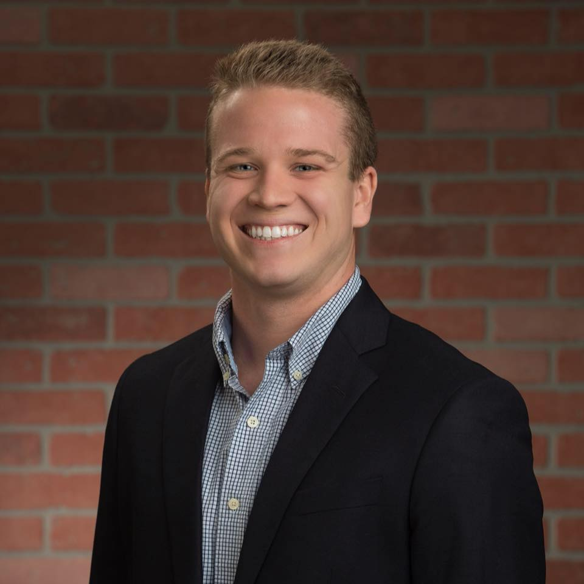

Brendan Ranney

| LinkedIn
| 904-710-1416 |
brendan.ranney@gmail.com | About Me
Summary
Specialization in project management, including development of detailed project plans, rapid problem & crisis resolution, customer relations, and client support throughout all phases of project execution. Experience in team management, internal relations, digital web-based marketing, and SEM/SEO strategy. Strong desire to work in a challenging, innovative environment with opportunities to learn and master new skills and technology. Recent passion sparked in coding and programming websites.
Skills & Proficiencies
Specializations:
- Offline: Project Management, Customer Relations, Account Management, Business Development
- SEO, PPC, Digital Media Analytics, Testing/Targeting, Website IA, Ecommerce Based Revenue
Proficiencies:
- HTML
- Microsoft Office [Excel, Powerpoint, OneNote, Word]
- Salesforce and Salesforce Lightning
- Sharepoint
- Google Analytics
- Adobe Analytics
Career Summary
Senior Account Manager | Jul 2022-Present
Vizergy | Jacksonville, FL [Remote]
- Applied expert knowledge of SEO, PPC, digital media, and website design and UI to increase ecommerce performance and achieve strategic goals for online revenue
- Achieved monthly sales targets, pipeline management via Salesforce, and facilitated contract renewals
- Measured, reviewed, and reported online performance vi Google Analytics, Adobe Analytics and various SEO analysis tools.
- Presented website performance metrics and recommendations to senior, key stakeholders and national brand teams on an annual basis
Senior Manager | Aug 2020-Jul 2022
Vizergy | Jacksonville, FL [Remote]
- Supervised 8+ person Operations Team to ensure completion of multiple concurrent projects and assignments within designated time frame and budget
- Directed internal and external communication of project status at a level that may be compensable to all levels of staff and customers involved
- Facilitated customer support and collaboration via providing troubleshoot assistance, guidance in optimizing services, and consistently ensuring achievement of customer metrics and goals
- Applied quick and structured problem-solving principles in order to prioritize various aspects of projects and assignments, adapt quickly to changes and setbacks, and mitigate effects of unexpected outcomes
Onboarding Project Manager | Nov 2019-Mar 2020
Vizergy | Jacksonville, FL
- Coordinated the onboarding process for new domestic and international clients at an award-winning digital marketing agency with the goal of delivering maximum online revenue
- Communicated with client to provide tailored education and training on sitemap, content, and conversion funnel strategy of their website in an easily understandable fashion
- Collaborated with client to conceptualize onboarding goals and current operations
- Directed numerous concurrently running projects related to website design and development, digital marketing strategy, and marketing campaigns
- Collaborated with multiple interdisciplinary teams to lead the web-design process and drive projects towards successful completion on time and within budget
Account Manager | Jan 2018-Nov 2019
Vizergy | Jacksonville, FL
- Managed one of Vizergy’s largest enterprise accounts with an individual account load of 65
- Applied expert knowledge of SEO, PPC and digital media to increase ecommerce performance and achieve strategic goals for online revenue
- Achieved monthly sales targets, pipeline management via Salesforce, and facilitated contract renewals
- Measured, reviewed and reported online performance via Google Analytics, Adobe Analytics and various SEO analysis tools
- Presented website performance metrics and recommendations to senior, key stakeholders and national brand teams on annual basis
Account Coordinator | Oct 2017-Dec 2017
Vizergy | Jacksonville, FL
- Analyzed data of website performance and prepared reporting documents to be used during monthly client review process
- Assisted SEM department with SEO related activities, to include keyword rank tracking, visibility, and competitive analysis
Education & Certifications
Education:
- Florida State University | 2017
B.A. English, minors in Communication and Religion
Certifications:
- Certified Hospitality Digital Marketer, HSMAI | Jun 2019-Present
- Google AdWords | May 2018-Present